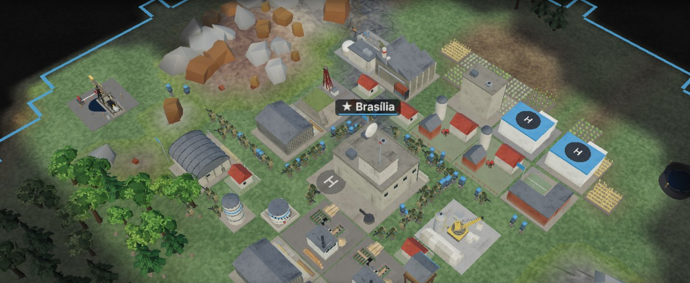
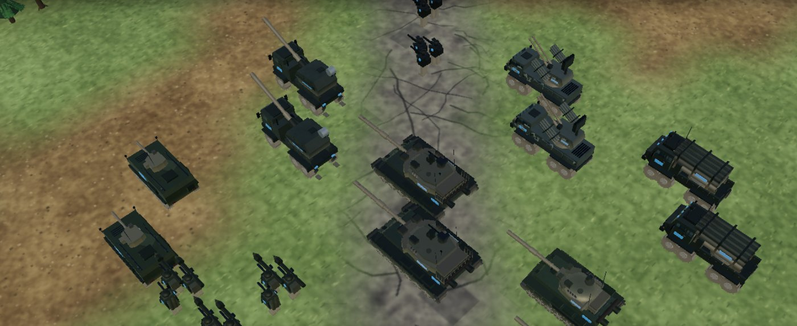

O Nation Commander foi idealizado como um RTS geopolítico em low poly, e o visual atual já entrega o que essa estética promete. Este relatório explica por que essa é a escolha certa e por que ela deve guiar o projeto daqui em diante.
Gráfico bom num RTS não é gráfico realista. É gráfico que se lê em um segundo, roda em qualquer aparelho e não se confunde com nenhum outro jogo.
As cinco conclusões
Low poly é uma estética, não uma limitação. Formas simples, facetas visíveis e cores chapadas são uma linguagem visual escolhida, com regras próprias. Ela envelhece bem.
Num RTS, ela é vantagem de jogo. O jogador olha de cima para dezenas de tropas e prédios ao mesmo tempo. Silhueta clara e cor da nação valem mais do que textura detalhada, que de longe vira ruído.
Ela é o que permite o jogo rodar no navegador e no celular. Nossos modelos têm de 700 a 6.200 triângulos, e o jogo inteiro baixa em cerca de 2,5 MB. Um visual realista multiplicaria o custo de cada modelo por 10 a 50 e o download por centenas.
É a estética que conseguimos produzir sozinhos, rápido e sem custo. Todos os prédios e tropas são gerados por código pelo Claude, a partir de fotos de referência, sem Blender, sem licenças e sem comprar modelos. O realismo exigiria artistas 3D, pacotes pagos e semanas por modelo.
O nosso visual deve ser nosso. Copiar a aparência de outros jogos dilui a identidade, cria inconsistência e não combina com o que o nosso jogo tem de único: eras, cores de nação, globo e escala de país.
RecomendaçãoAdotar o low poly estilizado como diretriz visual oficial (registrada no CLAUDE.md, que orienta todo o trabalho no repositório). O esforço gráfico vai para o que melhora o jogo dentro dessa estética: iluminação, efeitos, animação, legibilidade e as variantes de era. Não vai para o realismo.
1O que é low poly
"Poly" vem de polígono: as faces que formam um objeto 3D. Low poly é construir com poucas faces e deixar isso à mostra, de propósito.
◆
O que define a estética
Silhuetas fortes e reconhecíveis; facetas visíveis; cores chapadas ou com gradientes suaves; poucos detalhes, todos escolhidos; proporções levemente exageradas para ler bem de longe.
✕
O que ela não é
Não é "gráfico de jogo antigo" nem "gráfico inacabado". Um modelo low poly bem feito é tão trabalhado quanto um realista: o esforço está em decidir o que mostrar, não em empilhar detalhes.
Uma linguagem com regras
Como um desenho animado ou uma ilustração de livro, o low poly funciona porque é coerente: todas as peças falam a mesma língua. Um tanque facetado ao lado de um prédio facetado, sob a mesma luz e a mesma paleta, forma um mundo crível. O realismo, ao contrário, precisa que tudo seja realista ao mesmo tempo. Um único modelo fraco quebra a ilusão.

Uma base do Nation Commander na Guerra Fria: Centro de Comando, fazendas, poço com tanque, casas, quartel e fábrica. Cada prédio se reconhece pela forma e pela cor, mesmo de longe.
Ela envelhece bem
O visual realista é uma corrida contra o tempo: o que impressiona hoje parece datado em poucos anos, porque é comparado com a tecnologia mais nova. A estética estilizada não disputa essa corrida. Ela é julgada pela coerência e pelo charme, e por isso continua bonita muitos anos depois do lançamento. Para um jogo que pretendemos manter e expandir (eras, mapas, conteúdo naval, assinaturas), isso é decisivo.
2Por que funciona num RTS
Num jogo de estratégia em tempo real, o gráfico tem um trabalho específico: deixar o jogador entender o campo de batalha rápido o bastante para decidir.
A câmera de um RTS é alta
O jogador passa quase toda a partida olhando de cima, com dezenas de unidades e prédios na tela. Nessa distância, o que identifica uma tropa é a silhueta e a cor. A textura de uma lagarta de tanque, o desgaste de uma parede ou o reflexo de um capacete viram poucos pixels de ruído. O realismo gasta o orçamento do computador justamente no que o jogador não consegue ver.
Leitura em um segundo
O que o jogador precisa saber
Como o low poly entrega
De quem é esta unidade?
A cor da nação aplicada em partes grandes do modelo, visível de longe.
Que tipo de unidade é?
Silhuetas bem distintas: o cano longo do tanque, os tubos do Lança-Foguetes, o radar da antiaérea, o soldado com fuzil ou com lançador.
Que prédio é este?
Formas exageradas e únicas por função: silo cilíndrico, fábrica com chaminés, quartel com telhado em arco.
Onde está cada recurso?
Terreno com cores chapadas: solo fértil marrom, rocha cinza, floresta verde-escura, jazida de petróleo como mancha preta.
Em que era está o rival?
Cada era troca a aparência de todas as construções. Com formas simples, a diferença salta aos olhos.

Um exército misto: tanques, Tanques Modernos, artilharia, Antiaérea Móvel, Lança-Foguetes e infantaria. Cada tipo se distingue pela silhueta, sem precisar de zoom.
Clareza é parte da jogabilidadeNum RTS, perder porque não se percebeu um ataque de artilharia ou porque não se distinguiu um tanque de um blindado é frustração, não desafio. A estética clara é uma decisão de design de jogo, não só de arte.
3Desempenho: mais gente pode jogar
O Nation Commander roda no navegador, no computador e no celular, sem instalar nada. Isso só é possível porque cada modelo é leve.
Números medidos no nosso jogo
700–6.200
triângulos por modelo (prédios e tropas)
~2,5 MB
o jogo inteiro compilado (≈ 590 KB de código comprimido)
144 KB
de arquivos de modelo 3D (só pedras, rochedos e arbustos; o resto é gerado por código)
Modelo
Triângulos
Modelo
Triângulos
Infantaria
1.120
Casa
700
Veículo Blindado
1.670
Fazenda
808
Lança-Foguetes
1.360
Base Militar
1.372
Artilharia
3.654
Fábrica
1.500
Antiaérea Móvel
3.984
Centro de Comando
1.976
Tanque
5.020
Terminal Comercial
3.268
Tanque Moderno (Futuro Próximo)
6.176
Prefeitura
3.776
Contagem feita direto na geometria dos modelos do jogo (todas as partes, incluindo rodas, lagartas e detalhes), em outubro de 2026. Cena inteira medida no navegador (Sandbox, com 46 tropas, 15 prédios, o terreno e a vegetação do mapa): cerca de 450 mil triângulos por quadro, 369 chamadas de desenho e apenas 21 texturas.
Comparação com um visual realista
Em jogos realistas atuais, um veículo militar costuma ter dezenas de milhares de triângulos e vir acompanhado de um conjunto de texturas de alta resolução (cor, relevo, rugosidade, metal), que sozinho ocupa vários megabytes de memória de vídeo. Por isso esses jogos pedem placas de vídeo dedicadas e downloads de dezenas de gigabytes. São ordens de grandeza típicas do mercado, não medições nossas, mas a conta é clara:
Na tela: a nossa cena medida, com 46 tropas, 15 prédios, terreno e vegetação, desenha cerca de 450 mil triângulos. Só as 46 tropas em versão realista, a algumas dezenas de milhares de triângulos cada, já passariam de 1 milhão, antes de contar prédios, terreno e texturas.
No download: o nosso jogo inteiro (2,5 MB) tem o tamanho de uma ou duas texturas de alta resolução de um único modelo realista.
No celular: o sistema de qualidade adaptativa (KGPS) mantém 30 quadros por segundo no celular e 60 no PC, ajustando sombras e efeitos. Com modelos realistas, nem o nível mínimo caberia num celular comum.
Desempenho é públicoCada aparelho que roda o jogo é um jogador a mais. Notebooks simples, Chromebooks de escola e celulares intermediários são uma fatia enorme do público de jogos de navegador, e o low poly é o que nos permite atendê-los. Para quem paga hospedagem e servidores, é também o que permite crescer sem depender de jogadores com computador caro.
4Como produzimos os modelos
Este é o argumento mais prático: a estética low poly é a que conseguimos produzir com a equipe e o orçamento que temos.
Hoje: modelos gerados por código
Todos os prédios e tropas do Nation Commander são gerados por código (cerca de 7.100 linhas em src/game/render/models/). Cada modelo é montado com peças geométricas simples: caixas, cilindros, cunhas e prismas, com cores por camada (corpo, detalhe, cor da nação). Não há arquivo de modelo para baixar, abrir ou licenciar.
Referência: o diretor envia fotos do veículo ou do prédio real (por exemplo, um T-90M ou um lançador 8×8).
Modelo: o Claude escreve o código do modelo, peça por peça, respeitando proporções e silhueta.
Prévia: o modelo é renderizado sozinho, em vários ângulos, e conferido no jogo.
Ajuste: correções ("o canhão está curto", "a torre está alta") viram mudanças de número no código, em minutos.
Foi assim que nasceram o Tanque Moderno, a Artilharia, o Lança-Foguetes e a Antiaérea Móvel do Futuro Próximo, os caminhões das caravanas e as variantes de prédio de cada era.
Por que isso funciona bem no low poly, e não no realismo
Low poly (o que fazemos)
Realista
Ferramenta
Código, revisado como qualquer outra parte do jogo
Blender ou similares, escultura digital, pintura de texturas, retopologia
Quem faz
O Claude, a partir de fotos de referência
Artistas 3D especializados, ou pacotes comprados
Tempo por modelo
Minutos a poucas horas, com ajustes na hora
Dias a semanas por modelo de qualidade
Custo
Nenhum além da assinatura que já usamos
Horas de artista ou licenças por modelo e por pacote
Licença
O código é nosso: sem risco de uso indevido
Cada pacote tem regras próprias de uso e de redistribuição
Coerência
Mesmo kit de peças e mesma paleta em tudo
Pacotes de origens diferentes raramente combinam entre si
Variantes de era
Troca de peças e de paleta no código
Novo modelo e novas texturas para cada variante
Uma limitação honestaO Claude escreve geometria e cor; ele não esculpe em alta resolução nem pinta texturas fotográficas como um artista 3D. Para um visual realista, teríamos que trazer gente de fora, comprar pacotes ou aprender e manter um fluxo inteiro no Blender. O low poly é o estilo em que a nossa forma de produzir é forte. Mudar de estética trocaria um processo que funciona por um que não temos.
5Uma estética só nossa
O visual é a primeira coisa que um jogador vê, numa loja, num vídeo ou numa captura de tela. Ele precisa dizer "Nation Commander", e não "parece aquele outro jogo".
Por que não copiar o visual de outros jogos
Identidade: um jogo que imita a aparência de outro é lembrado como "a versão menor daquele". Um jogo com cara própria é lembrado pelo nome.
Coerência: cada jogo tem um visual pensado para a câmera, a escala e as regras dele. Transplantar só a aparência, sem o resto, produz um mundo desencontrado: um prédio que parece de um jogo ao lado de um tanque que parece de outro.
Comparação injusta: imitar um jogo feito por centenas de pessoas convida o jogador a comparar, e perdemos essa comparação. Com uma estética própria, somos avaliados pelo que fazemos bem.
Segurança: uma identidade visual nossa nos afasta de qualquer acusação de cópia de marca, estilo ou recurso visual de terceiros.
A mesma base na Guerra Fria e no Futuro Próximo. As eras são um recurso que poucos RTS têm, e com formas simples a transformação da nação inteira fica evidente.
O que já é marca do Nation Commander
Eras que mudam a nação
Guerra Fria, Pós-Guerra Fria, Era Digital e Futuro Próximo, com prédios e tropas que trocam de aparência.
Cor da nação
Cada país com a sua cor, aplicada em partes grandes de cada modelo, com bandeiras e nomes de cidades reais.
Do mapa ao globo
O teatro de operações em 3D e o globo da diplomacia na mesma linguagem visual.
Vida na base
Cidadãos andando, caravanas na estrada, bombas de petróleo girando, fumaça, explosões e o foguete do Programa Espacial.
6Para onde vai o esforço gráfico
Escolher o low poly não é parar de melhorar o visual. É melhorar o visual dentro da nossa linguagem, onde cada hora de trabalho rende mais.
Há muito espaço para quem quer cuidar do gráfico, e é aqui que o trabalho do co-diretor faz mais diferença:
Área
Exemplos que valorizam o jogo sem sair do low poly
Luz e atmosfera
Iluminação por hora do dia, céu e neblina por tipo de mapa, sombras suaves, contorno nas unidades selecionadas.
Efeitos
Explosões, fumaça, rastros de míssil, poeira de veículos, fogo em prédios danificados, tudo em formas facetadas.
Animação
Recuo de canhão, torres girando, soldados com poses de tiro, portas da fábrica abrindo, caminhões manobrando.
Legibilidade
Silhuetas ainda mais distintas, ícones de estado, cor da nação mais visível no zoom distante.
Variantes de era
Completar as tropas e os prédios que ainda não têm versão do Futuro Próximo (infantaria, blindado, aviões, prédios).
Mapas e biomas
Paletas próprias para Deserto, Montanhoso, Rios e Pontes, e os futuros mapas navais.
Interface
Miniaturas do menu com o modelo da era atual, painéis mais claros, retratos das unidades.
Como pedir uma melhoria visualMande fotos de referência e diga o que incomoda ("o caminhão parece pequeno", "não dá para distinguir o blindado do tanque"). Isso vira código em minutos. Foi assim com os caminhões das caravanas, as estradas de asfalto e os veículos do Futuro Próximo.
Perguntas comuns
"Mas jogadores não querem gráfico bonito?"
Querem gráfico bonito, e bonito não é sinônimo de realista. Muitos dos jogos de estratégia e de gestão mais jogados e duradouros usam visual estilizado. O que o jogador não perdoa é um visual incoerente, pesado ou confuso.
"Low poly não passa a impressão de jogo barato?"
Passa quando é feito sem cuidado: peças sem coerência, cores aleatórias, sem luz nem animação. Bem feito, transmite estilo e intenção. O caminho para parecer profissional é polimento dentro da estética, que é exatamente a lista acima.
"E se no futuro quisermos realismo?"
Seria outro jogo: outro orçamento, outra equipe, outro público (só computadores fortes) e outro processo de produção. Não é uma melhoria incremental do jogo atual.
7A diretriz visual do projeto
A partir deste relatório, estas regras valem para todo o trabalho gráfico no Nation Commander. Elas estão registradas no CLAUDE.md do repositório, que orienta cada sessão de desenvolvimento.
O Nation Commander é low poly estilizado. Formas facetadas, cores chapadas por camada, silhueta forte. Não buscamos realismo fotográfico.
Leitura antes de detalhe. Todo modelo precisa ser identificável de longe pela silhueta e pela cor da nação. Detalhe que não se lê na câmera normal do jogo não entra.
Coerência acima de tudo. Todo modelo novo usa o mesmo kit de peças, a mesma paleta por era e a mesma luz. Nada de misturar estilos.
Visual próprio. Fotos do mundo real servem de referência de forma e proporção. A aparência de outros jogos não é copiada nem transposta para o nosso.
Orçamento de desempenho. Tropas e prédios ficam na faixa atual (até cerca de 6 mil triângulos por modelo), sem texturas fotográficas. O jogo precisa continuar rodando no navegador e no celular.
Modelos por código. Prédios e tropas continuam gerados em src/game/render/models/. Arquivos externos só com licença livre (como os CC0 da natureza) e no mesmo estilo.
Investir no polimento. Esforço gráfico vai para luz, efeitos, animação, legibilidade, variantes de era e biomas, não para aumentar o realismo.
Em uma fraseO Nation Commander deve ser reconhecido pela sua cara: uma nação inteira em low poly, clara, leve e coerente, que evolui de era em era.
Fontes dos números: geometria dos modelos do jogo e compilação de produção do cliente (outubro de 2026); sistema de qualidade adaptativa descrito em docs/KGPS_KAICS.md; modelos de natureza CC0 em public/assets/models/nature/. As faixas de triângulos e de texturas de jogos realistas são ordens de grandeza típicas do mercado, não medições nossas.